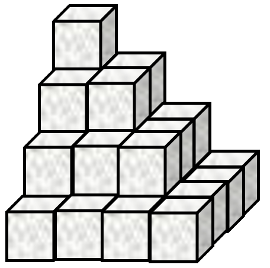
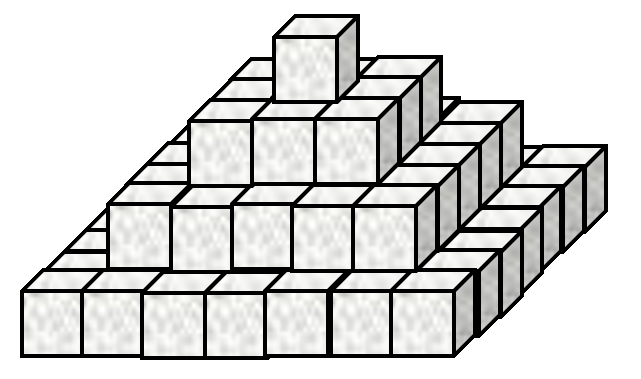
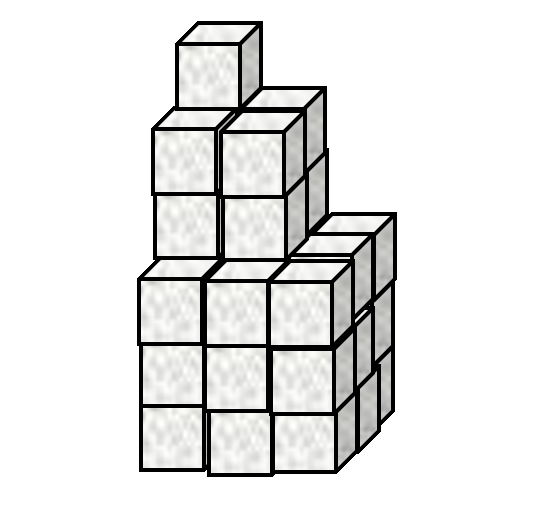

First Steps
It is easy to add lists of numbers together
1 2 3 + 4 5 6
5 7 9
Negative numbers are written with a high minus ¯ to differentiate between negation ¯3 = -3 and literal negative numbers
1 2 3 - 1 0 ¯1
0 2 4
Singleton extension
Dyadic functions (functions with two input arguments, one on the left and one on the right) can map between a single value and an array of values.
3 × 1 10 100
3 30 300
3 = 1 2 3 4 5
0 0 1 0 0
The reduction operator
Adding a list of numbers could become very tedious...
1+2+3+4+5+6+7+8+9+10+11+12+13+14+15
120
The reduce operator F/ inserts the function F to its left between parts of the right argument array.
+/1 2 3 4 5 6 7 8 9 10 11 12 13 14 15
120
The index generator
The index generator ⍳⍵ generates integers up to the integer right argument ⍵
⍳10
1 2 3 4 5 6 7 8 9 10
So we can do an arithmetic sum as follows
| Traditional Mathematical Notation (TMN) | APL |
| \(\sum_{n=1}^N n\) | +/⍳N |
Order of execution
Infix (dyadic) functions have a short left scope and long right scope.
10×⍳2+5
10 20 30 40 50 60 70
The expresssion above is "ten times the indices from 1 to two plus five, or in short: "ten times iota two plus five". We can make it clearer using (superfluous) parentheses ().
10×(⍳(2+5))
10 20 30 40 50 60 70
Of course, we can change the order of execution using different parentheses.
(10×⍳2)+5
15 25
Problem Set 1
-
A Mathematical Notation
Use APL to evaluate the following
-
\(\prod_{n=1}^{12} n\) (multiply together the first twelve integers)
-
\(\sum_{n=1}^{17}n^2\) (add together the first seventeen squared integers)
-
\(\sum_{n=1}^{100}2n\) (add together the first one hundred positive even integers)
-
\(\sum_{n=1}^{100}2n-1\) (add together the first one hundred odd integers)
-
In traditional mathematical notation (TMN), the following equation equals
0, why does the following return70?84 - 12 - 1 - 13 - 28 - 9 - 6 - 15 70
-
-
Pyramid Schemes
-
Sugar cubes are stacked in an arrangement as shown by Figure 1.

Figure 1. Stacked sugar cubes This stack has
4layers and a total of30cubes. How many cubes are there in a similar stack with467layers? -
Now consider the stack in Figure 2.

Figure 2. Differently stacked sugar cubes The arrangement in Figure 2 has
4layers and84cubes. How many cubes are there in a similar stack with812layers? -
Now look at Figure 3.

Figure 3. This is just a waste of sugar cubes by now... The stack in Figure 3 has
3"layers" and36cubes in total. How many cubes are there in a similar stack with68"layers"?
-
-
What's in a Vector?
⎕AVUis a list (vector) of numbers (don't worry about what it represents). Find the following properties of⎕AVU:-
Find the sum of all the values in
⎕AVU. -
Find the product of all the values in
⎕AVU. -
What is the length of
⎕AVU? -
Find the mean average of
⎕AVU.
-